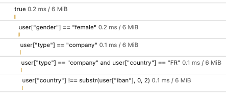

Expression language in Symfony
Beyond the Framework
By Rémi JANOT
| r.remove.this.janot@gmail.com
1.
What is the problem?
2.
How can Expression Language help me?
3.
Demo time
About me
|
Live in France |
AFOL |
Comedian 
|
About me & my work
20 years working in IT
About me & my work
Co-founder & CTO at Wheeliz
About me & my work
Co-founder & CTO at Vasco.fund
Creating a Startup
« How to change anything As Fast As POSSIBLE »
Friday 6 p.m.
« Hey Rémi ! 👋 We send a newsletter in a few minutes because Sunday is Mothers’ Day. But we would like to try a new discount code that make… »
« Hey Rémi ! 👋 We send a newsletter in a few minutes. We have created the discount code of 10€ but it should only be usable by users which… »
Creating a SAAS Startup
« How to change anything As Fast As LIGHTNING »
What does Vasco.fund do?
Vasco is a software dedicated to private banking and small & medium asset managers
These professions are required to ask many financial questions: KYC (Know Your Customer)
They have plenty of questions to ask
Create the question entity
namespace App\Entity;
// use ...
class Question
{
private ?int $id = null;
#[Assert\NotBlank]
private ?string $question;
#[Assert\NotBlank]
private ?string $condition = null;
public function getId(): ?int
{
return $this->id;
}
public function getQuestion(): ?string
{
return $this->question;
}
public function setQuestion(?string $question): self
{
$this->question = $question;
return $this;
}
public function getCondition(): ?string
{
return $this->condition;
}
public function setCondition(string $condition): self
{
$this->condition = $condition;
return $this;
}
}
Monday 10 a.m.
« Hey Rémi ! 👋 Customer A would like to have a question only in case X »
Tuesday 2 p.m.
« Hey Rémi ! 👋 Customer B would like to have a question only in case Y »
Wednesday 11 a.m.
« Hey Rémi ! 👋 Customer C would like to have a question only in case Z »
What are cases X, Y and Z?
| Ask for ... | ... if the user filling the form ... |
|---|---|
| Maiden Name | Is a woman |
| Corporate name | Is a company |
| Siren | Is a French company |
| Funds origin | Has invested more than 1M€ |
| Detailed explanations | If the IBAN start with a country different than the fiscal country |
1st solution
- List every simple case that may arrived
- List combinations of these cases
- Name these cases
- Create an SQL snippet for every cases
SQL query to get questions
SELECT *
FROM kyc_question
WHERE
(
kyc_question.condition == 'isWoman'
AND (
SELECT 1
FROM user
WHERE id=:loggedInUserId AND gender = 'woman'
)
)
OR
(
kyc_question.condition == 'isCompany'
AND (
SELECT 1
FROM user
WHERE id=:loggedInUserId AND type = 'company'
)
)
OR
(
kyc_question.condition == 'isFrenchCompany'
AND (
SELECT 1
FROM user
WHERE id=:loggedInUserId AND type = 'company'
AND country = 'FR'
)
)
OR
(
kyc_question.condition == 'hasInvestedMoreThan1M'
AND (
SELECT 1
FROM user
WHERE id=:loggedInUserId
AND cumulatedInvestment >= 1000000
)
)
OR
(
kyc_question.condition == 'sameCountry'
AND (
SELECT 1
FROM user
WHERE id=:loggedInUserId
AND country = SUBSTR(iban, 1, 2)
)
)
/* ... */
It works !
🚀
1st solution
- List every simple case that may arrived
- List combinations of these cases
- Name these cases
- Create an SQL snippet for every cases
- Cross fingers
Drawback of the 1st solution 🤔
- Complex query
- Need a release to add a new condition
- Many dead code depending on the SaaS configuration
- Need a developer to add a new condition
2nd solution
Complex query- Need a release to add a new condition
- Many dead code depending on the SaaS configuration
- Need a developer to add a new condition
2nd solution
Need to keep the condition field
Evaluate in PHP
Create the question repository
class QuestionRepository
{
public function findQuestionsForUser(User $user)
{
$toReturn = [];
foreach($this->findAll() as $question) {
if ($this->isRelevant($question, $user)) {
$toReturn[] = $question;
}
}
return $toReturn;
}
public function isRelevant(Question $question, User $user): bool
{
switch($question->getCondition()) {
case 'isWoman':
return $user->getGender() === 'woman';
case 'isCompany':
return $user->getType() === 'company';
case 'isFrenchCompany':
return $user->getType() === 'company' && $user->getCountry() === 'FR';
case 'hasInvestedMoreThan1M':
return $user->getCumulatedInvestment() >= 1000000;
case 'sameCountry':
return $user->getCountry() !== substr($user->getIban(), 0, 2);
}
throw new \OutOfBoundsException();
}
}
2nd solution
Complex query- Need a release to add a new condition
- Many dead code depending on the SaaS configuration
- Need a developer to add a new condition
3rd solution
Complex query-
Need a release to add a new condition
⇒ put the PHP condition code in the DB - Many dead code depending on the SaaS configuration
- Need a developer to add a new condition
class QuestionRepository
{
//...
public function isRelevant(Question $question, User $user): bool
{
return eval($question->getCondition());
}
}
3rd solution
Complex query-
Need a release to add a new condition Many dead code depending on the SaaS configuration- Need a developer to add a new condition
CRITICAL SECURITY ISSUE
Variables can be read or changed
Dangerous functions accessible, can alter system files
If eval() is the answer, you're almost certainly asking the wrong question.
Rémi, you are supposed to talk about Expression Language 😕
What is Expression Language
-
Really simple programmation language
- Only one liner
- A very restricted PHP sandbox: No functions given by default
-
Used in Symfony Core
- Introduced in September 2013, in Symfony 2.4
- The expression can be evaluated at runtime or compiled into PHP
Usage of ExpressionLanguage in Symfony Core
Dependency Injection
services:
# ...
App\Mail\MailerConfiguration: ~
App\Mailer:
# the '@=' prefix is required when using expressions for arguments in YAML files
arguments:
- '@=service("App\\Mail\\MailerConfiguration").getMailerMethod()'
# when using double-quoted strings, the backslash needs to be escaped twice (see https://yaml.org/spec/1.2/spec.html#id2787109)
# arguments: ["@=service('App\\\\Mail\\\\MailerConfiguration').getMailerMethod()"]
Usage of ExpressionLanguage in Symfony Core
Security
namespace App\Controller;
use Symfony\Bundle\FrameworkBundle\Controller\AbstractController;
use Symfony\Component\ExpressionLanguage\Expression;
use Symfony\Component\Security\Http\Attribute\IsGranted;
class MyController extends AbstractController
{
#[IsGranted(new Expression(
'is_granted("ROLE_ADMIN") or is_granted("ROLE_MANAGER")'
))]
public function show()
{
// ...
}
}
Usage of ExpressionLanguage in Symfony Core
Routing
namespace App\Controller;
use Symfony\Bundle\FrameworkBundle\Controller\AbstractController;
use Symfony\Component\Routing\Annotation\Route;
class DefaultController extends AbstractController
{
#[Route(
'/contact',
name: 'contact',
condition: "
context.getMethod() in ['GET', 'HEAD']
and request.headers.get('User-Agent') matches '/firefox/i'
",
)]
public function contact()
{
// ...
}
Usage of ExpressionLanguage in Symfony Core
Validation
namespace App\Model;
use Symfony\Component\Validator\Constraints as Assert;
#[Assert\Expression(
"this.getCategory() in ['php', 'symfony']
or !this.isTechnicalPost()",
message: 'If this is a tech post, the category should be either php or symfony!',
)]
class BlogPost
{
// ...
}
Usage of ExpressionLanguage in Symfony Core
Workflows
framework:
workflows:
blog_publishing:
transitions:
reject:
guard: "is_granted('ROLE_ADMIN') and subject.isRejectable()"
from: reviewed
to: rejected
class QuestionRepository
{
//...
public function isRelevant(Question $question, User $user): bool
{
// ExpressionLanguage evaluation here
}
}
3rd solution
Complex query-
Need a release to add a new condition Many dead code depending on the SaaS configuration- Critical security issue
- Need a developer to add a new condition
4th solution
Complex query-
Need a release to add a new condition Many dead code depending on the SaaS configuration-
Critical security issue - Need a developer to add a new condition
Create your own Expression Language component
namespace App\Service;
use Psr\Cache\CacheItemPoolInterface;
use Symfony\Component\ExpressionLanguage\ExpressionLanguage
as BaseExpressionLanguage;
class ExpressionLanguage extends BaseExpressionLanguage
{
public function __construct(
CacheItemPoolInterface $cache = null,
array $providers = []
) {
parent::__construct($cache, $providers);
}
}
Use your own Expression Language
class QuestionRepository
{
public function __construct(
private \App\Service\ExpressionLanguage $expressionLanguage,
private \Symfony\Component\Serializer\NormalizerNormalizerInterface $normalizer
)
{
}
//...
public function isRelevant(Question $question, User $user): bool
{
return $this->expressionLanguage->evaluate(
$question->getCondition(),
[
'question' => $this->normalizer->normalize($question),
'user' => $this->normalizer->normalize($user),
]
);
}
}
Expressions
| Ask for ... | ... with this expression ... |
|---|---|
| Maiden Name |
|
| Corporate name |
|
| Siren |
|
Expressions
| Ask for ... | ... with this expression ... |
|---|---|
| Funds origin |
|
| Detailed explanations |
|
4th solution
Complex query-
Need a release to add a new condition Many dead code depending on the SaaS configuration-
Critical security issue -
Need
a developersomeone knowing a little about the database schema / objects given and understanding this simple language to add a new condition
SyntaxError
The function "getCumulatedInvestment" does not exist around position 1 for expression `getCumulatedInvestment(user["id"]) >= 1000000`.
The function "substr" does not exist around position 20 for expression `user["country"] !== substr(user["iban"], 0, 2)`.
Register your own functions
namespace App\Service;
use Psr\Cache\CacheItemPoolInterface;
use Symfony\Component\ExpressionLanguage\ExpressionLanguage
as BaseExpressionLanguage;
class ExpressionLanguage extends BaseExpressionLanguage
{
public function __construct(
CacheItemPoolInterface $cache = null,
array $providers = []
) {
parent::__construct($cache, $providers);
}
}
Group your functions in Providers
use Symfony\Component\ExpressionLanguage\ExpressionFunction;
use Symfony\Component\ExpressionLanguage\ExpressionFunctionProviderInterface;
class StringExpressionLanguageProvider
implements ExpressionFunctionProviderInterface
{
public function getFunctions(): array
{
return [
ExpressionFunction::fromPhp('substr')
];
}
}
Group your functions in Providers
use Symfony\Component\ExpressionLanguage\ExpressionFunction;
use Symfony\Component\ExpressionLanguage\ExpressionFunctionProviderInterface;
class TransactionExpressionLanguageProvider
implements ExpressionFunctionProviderInterface
{
public function __construct(
private EntityManagerInterface $entityManager
) {
}
public function getFunctions(): array
{
return [
new ExpressionFunction(
// name
'getCumulatedInvestment',
// compiler
function() {return '';},
// evaluator
function ($arguments, $user): int {
return $this->entityManager
->getRepository(Transaction::class)
->getCumulatedInvestment($user);
}
)
];
}
}
Create your own Expression Language component
services:
expressionLanguage.kyc:
class: App\Service\ExpressionLanguage
arguments:
$providers:
- '@App\ELProvider\TransactionExpressionLanguageProvider'
- '@App\ELProvider\StringExpressionLanguageProvider'
expressionLanguage.featureFlag:
class: App\Service\ExpressionLanguage
arguments:
$providers:
- '@App\ELProvider\StringExpressionLanguageProvider'
Performance
We did it !
🚀
Optimize: Use cache
namespace App\Service;
use Psr\Cache\CacheItemPoolInterface;
use Symfony\Component\ExpressionLanguage\ExpressionLanguage
as BaseExpressionLanguage;
class ExpressionLanguage extends BaseExpressionLanguage
{
public function __construct(
CacheItemPoolInterface $cache = null,
array $providers = []
) {
parent::__construct($cache, $providers);
}
}
Optimize: Use cache
-
By default, cache is an ArrayAdapter
➜ cache only for the request lifetime -
PSR-6 Cache adapter provided by Symfony:
- APCU
- Couchbase
- Doctrine / PDO
- File system
- Memcached
- Redis
Optimize: What does the cache change?
Steps for expression evaluation:
public function evaluate(Expression|string $expression, array $values = []): mixed
{
return $this->parse($expression, array_keys($values))
->getNodes()
->evaluate($this->functions, $values);
}
Optimize: What does the cache change?
parse()
The parse function take the expression language and create PHP objects acting like the expression
These PHP objects are an Abstract Syntax Tree
Optimize: How to speed up evaluation?
Removing AST evaluation
Compilation
When Symfony is building its cache, some PHP files are created (the container, the router, ...)
Symfony take expressions given in yaml or attributes and compile them to have a runnable PHP code
This PHP code is written in cached PHP files
This PHP code is executed at runtime, but as it is PHP code it is faster than evaluating the AST
Compilation
services:
# ...
App\Mailer:
arguments:
- '@=service("App\\Mail\\MailerConfiguration").getMailerMethod()'
Compilation
/**
* @internal This class has been auto-generated by the Symfony Dependency Injection Component.
*/
class getMailerService extends App_KernelDevDebugContainer
{
/**
* Gets the private 'App\Mailer' shared autowired service.
*
* @return \App\Mailer
*/
public static function do($container, $lazyLoad = true)
{
include_once \dirname(__DIR__, 4).'/src/Mailer.php';
return $container->privates['App\\Mailer'] =
new \App\Mailer(
$container->get("App\\Mail\\MailerConfiguration")->getMailerMethod()
);
}
}
Think out of the box
- Determine form field visibility (in a dynamic form)
- Discount codes (is applicable & amount)
- Feature flags
- CMS Page access control
- ...
Demo time
Repository available here